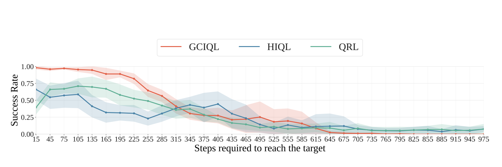
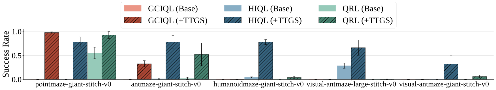

Abstract
Offline goal-conditioned reinforcement learning (GCRL) trains policies that reach user-specified goals at test time, providing a simple, unsupervised, domain-agnostic way to extract diverse behaviors from unlabeled, reward-free datasets. Nonetheless, long-horizon decision making remains difficult for GCRL agents due to temporal credit assignment and error accumulation, and the offline setting amplifies these effects. To alleviate this issue, we introduce Test-Time Graph Search (TTGS), a lightweight planning approach to solve the GCRL task. TTGS accepts any state-space distance or cost signal, builds a weighted graph over dataset states, and performs fast search to assemble a sequence of subgoals that a frozen policy executes. When the base learner is value-based, the distance is derived directly from the learned goal-conditioned value function, so no handcrafted metric is needed. TTGS requires no changes to training, no additional supervision, no online interaction, and no privileged information, and it runs entirely at inference. On the OGBench benchmark, TTGS improves success rates of multiple base learners on challenging locomotion tasks, demonstrating the benefit of simple metric-guided test-time planning for offline GCRL.
Motivation and Method
We visualize the core challenge that GCRL agents face. In long, complex tasks like maze navigation, agents that attempt to reach far-away goals can get stuck or run off course. However, for shorter horizons, they tend to be reliable.
From this observation, we derive the simple key idea behind TTGS: rather than asking a policy to solve a long-horizon task in one shot, we decompose it into short, reliable hops. We do so by equipping test-time planning with a distance signal over states, selecting a compact set of representative states from an offline dataset, and connecting them into a graph whose edges reflect predicted step costs. At test time, we plan in this graph by computing a shortest path between the start and the goal, then feed the policy a small number of intermediate subgoals along this path. The agent queries all points along the shortest path that are within a certain threshold from the current state, and picks the closest to the goal.



(left) HIQL policy fails to reach a distant goal on antmaze-giant-stitch-v0, with multiple attempts failing to exit the starting area and two attempts running out of time due to inefficient path. (right) TTGS finds a guiding path using dataset observations. On each step it selects a subgoal which is within a predefined radius from the agent. We mark all data points on the guiding path in gray, and the actual path traversed by the agent in blue. (bottom) Different agents' policy performance decreases as steps required to reach the goal increase. By providing a policy with close subgoals, TTGS improves reliability and efficiency of reaching the goal.
Using the distance predictor, which for value-based base agents can be derived by mapping predicted values into distance, we build a graph with vertices sampled from the states of pretraining dataset and weights obtained by clipping the distances and applying a superlinear penalty to long connections. This graph is goal-agnostic, which means it can be reused for different goals an agent might want to achieve in the environment.
To find the path to a given goal, the agent first precomputes the shortest path from the vertex closest to the starting state to the vertex closest to the goal state. After that, the agent selects subgoals from this guiding path which are within distance T from current step, or next after the closest vertex on the path if all other potential subgoals are too far.
Results
We evaluate TTGS on OGBench using three strong offline GCRL baselines from the benchmark: QRL, GCIQL, and HIQL. For each dataset we compare the success rate of the frozen base policy with and without TTGS. TTGS uses distances derived from the base agent’s value function, so it relies only on information available at test time. TTGS generally improves or maintains success across all evaluated environments, with the largest gains on giant layouts where one-shot execution is difficult.
BibTeX
@misc{opryshko2025testtimegraphsearchgoalconditioned,
title={Test-Time Graph Search for Goal-Conditioned Reinforcement Learning},
author={Evgenii Opryshko and Junwei Quan and Claas Voelcker and Yilun Du and Igor Gilitschenski},
year={2025},
eprint={2510.07257},
archivePrefix={arXiv},
primaryClass={cs.LG},
url={https://arxiv.org/abs/2510.07257},
}